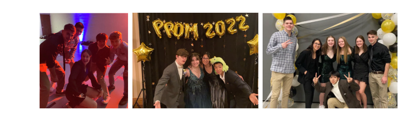

ในนามของเด็กตัวน้อยคนนึง ที่ได้เรียนรู้และเติบโตผ่านการเวลาและประสบการณ์ ไม่ว่าจะมาจากโอกาสที่ได้ไปเรียนแลกเปลี่ยน หรือโอกาสที่ได้ลองทำในหลายๆอย่าง
ผมรู้สึกว่าผมเป็นเด็กที่โชคดีมาก ที่ได้โตมาในสังคมที่ดีและครอบครัวที่ดี ได้ทำงานในส่วนต่างๆและเรียนรู้ในสิ่งต่างที่แปลกใหม่ สิ่งเหล่านี้ที่ผมได้ผ่านมันมามันเป็นสิ่งที่สร้างตัวตนของผมขึ้นมาในทุกๆวันนี้
ผมรู้ว่าผมเป็นคนที่แกร่งและภูมิใจในตัวเองมาก และนั่นก็เป็นสาเหตุที่ทำให้ผมเลือกที่จะผ่านทุกอุปสรรค ลองทุกความท้าทายเพื่อหาจดมุ่งหมายและทำเป้าหมายให้สำเร็จ
About Me
Nickname : Santa
Portfolio
School Project ผลงานเกี่ยวกับการเรียนทางสายการเรียน AI - โปรเจคที่ได้สร้างและรางวัลการแข่งขัน
School Activities ผลงานเกี่ยวกับกิจกรรมต่างในช่วงมัธยมปลาย-หนังสั้น พิธีกรและกิจกรรมอื่นๆ
Exchange Student ประสบการณ์ที่ได้เรียนรู้ในช่วงปีที่ไปเรียนแลกเปลี่ยนที่ USA และการเติบโตที่แปลกใหม่
Leadership skill ผลงานและสิ่งที่ได้เรียนรู้ในการทำงานของตำแหน่งประธานสี นายกสโมสรและกิจกรรมอื่นๆ
School Project
AI Detected-motorcycles on the sidewalk (2023)
โปรเจ็กต์นี้ใช้แอปพลิเคชันชื่อ "CiRA CORE" เพื่อสร้างโมเดล AI เพื่อตรวจจับการขี่รถจักรยานยนต์บนทางเท้าที่ผิดกฎหมาย แอปพลิเคชันที่ใช้ในการบันทึกข้อมูล ได้แก่ ป้ายทะเบียน สถานที่ เวลา และหลักฐาน โดย AI จะส่งไปที่แอปพลิเคชัน LINE เพื่อรายงานการกระทำความผิดบนเว็บไซต์ https://reward.bangkok.go.th/reward2/
โปรเจคครั้งแรกในการทำงานกับAI ได้สร้างโมเดลเอไอขึ้นมาและได้ทดลองใช้ ได้เรียนรู้วิธีการใช้ AI และรู้จัก AI มากขึ้น ได้การทำงานเป็นกลุ่มได้ระดมแนวคิดด้วยกันในกลุ่ม ได้มุมมองการทำโปรเจคใหญ่ขึ้นมา ได้ทดลองทำผ่านอุปสรรคหลายๆอย่างมาจากงานชิ้นนี้
Ai-sorting eggs (2020)
โครงงานนี้ใช้สำหรับการคัดแยกไข่ที่ดีและไข่แตก โดยใช้ AI ตรวจจับรอยแตกบนเปลือกไข่ เข้าร่วมการแข่งขัน: Kamalasai AI Robotics and Technology Thailand Championship #5 โดยโรงเรียนกมลาไสย
การทดลองสร้าง AI เพื่อทำงานประกวดแข่งขันกับเพื่อน 1คน
ได้ลองทำงานและรับมือกับสถานการณ์กดดันแบบใหม่
ได้ลองใช้งานในการตรวจจับที่ละเอียดของรูปภาพ
THE GOLD MEDALS AWARD IN OBOTICS cOMPETITION (2022)
ได้รับรางวัลระดับเหรียญทอง งานศิลปหัตถกรรม ครั้งที่ 70
ในการแข่งขันหุ่นยนต์ ระดับพื้นฐาน ม.4 - ม.6
ได้เรียนรู้การทำงานและการรับผิดชอบของหน้าที่ของแต่ละบุคคล
ได้เห็นขั้นตอนการสร้างหุ่นยนต์ ที่น้อยครั้งจะได้มีประสบการณ์ ดีใจที่ครั้งนึงได้ลองทำงานในระยะเวลากดดัน กับการแข่งขันพร้อมเพื่อนที่สนิท
the 3rd prize in the Top Thinker (2021)
ได้รับรางวัลที่ 3 ประเภท Top Thinker ในหัวข้อ “การพัฒนาการเรียนการสอนสมัยใหม่” แอปพลิเคชัน Cocolearn เพื่อการเรียนรู้” โดยการสร้างรูปแบบการเรียนรู้สมัยใหม่ด้วย Augmented Reality เทคโนโลยีที่ใช้การศึกษาวัตถุ 3 มิติ
สิ่งที่ได้รับคือการปลุกแนวคิดในสมองของทกคนในกลุ่มออกมาใช้งานอย่างมีประสิทธิภาพ ได้มุมมองการเรียนการสอนแบบใหม่ ที่ไม่เคยเห็นมุมมองการทำงานแบบนี้ ได้เรียนรู้การคิดแบบใหม่อย่างเต็ม100
School Activities
the ecobrick project (voluntaries)
โครงการนี้เป็นหนึ่งในความภาคภูมิใจในตัวเองในการทำจิตอาสา ผมได้เป็นผู้นำทีมบริหารและออกแบบขั้นตอนการทำงาน ที่จะจัดกิจกรรมในครั้งนี้
ได้พาน้องๆเพื่อนๆมาเรียนรู้และศึกษาการทำบ้านจากขวดพลาสอิฐ ได้รับความรู้การนำสิ่งที่ไม่ได้ใช้มาให้เกิดประโยชน์
ได้รู้จักการทำงานร่วมกับผู้อื่น และได้พัฒนาความสามารถในการจัดการออกแบบงานทั้งหมดออกมา
short film contest
by safety commitee
รับหน้าที่ในการจัดการงานต่างๆ ประสานงานกับผู้คนและสถานที่ เตรียมอุปกรณ์ และช่วยจัดฉากภาพยนตร์ในฐานะผู้อำนวยการสร้าง
เรียนรู้การออกกองถ่าย ได้รับประสบการณ์การทำงานแบบใหม่กับผู้คนกลุ่มใหม่ ได้เข้าใจวิธีการในการเรียบเรียงลำดับการทำงานในอีกรูปแบบ
ได้รับรอยยิ้มที่มาจากทำงาน
EMCEE National SCIENCE Week
รับหน้าที่ในการเป็นพิธีกรดำเนินงานกิจกรรม Mr.& Miss Recycle ประจำวันวิทยาศาสตร์
ได้ทดลองเรียนรู้การพูดไมค์ในที่สาธารณะต่อผู้คนหลายคน ได้ลองทำและเก็บประสบการณ์ที่ไม่เคยได้รับมาก่อน
National Science Day
ได้เป็นผู้นำเสนอผลงานทางด้านหุ่นยนต์ของสายการเรียนให้ผู้ใหญ่อย่าง ผู้อำนวยการการ
ได้ฝึกพูดการนำเสนอและได้เรียนรู้วิธีการสื่อสารที่เข้าใจให้กับผู้คนภายนอกให้เข้าใจได้
Staff ped-turn-pro the youth camp
รับหน้าที่ในการเป็นพิธีกรและเป็นสตาฟในการดำเนินกิจกรรมในค่าย เป็นผู้พูดมุมมองเรื่องต่างๆในกิจกรรม
ได้ลองการจับไมค์พูดและทำงานในรูปแบบสตาฟ เป็นรุ่นพี่ผู้จัดทำงานในค่าย ได้เรียนรู้การทำงานการเข้าใจ การศึกษาระบบการทำงานเบื้องหลัง
Exchange Student
1 acadamic year of exchange student
ปีแห่งชีวิตที่ดีที่สุดในการเรียนมัธยม
Monett High School
ให้ประสบการณ์ในเรื่องความอดทนและความกล้าหาญเพื่อที่จะใช้ชีวิตโดย
ไม่มีครอบครัว และการเติบโตอย่างภูมิใจ ได้เรียนรู้คำว่าเติบโตจากประสบการณ์นี้ ได้เรียนรู้ภาษา สังคม วัฒนธรรมต่างๆและรับความรู้สึก
ประสบการณ์ที่ไม่สามารถพูดออกมาให้คนอื่นเข้าใจได้
Events Prom & ROSE 2022

การเข้าร่วมกิจกรรมและเรียนรู้วัฒนธรรมที่ USA
ให้ประสบการณ์และเรียนรู้เรื่องราว วัฒนธรรมใหม่ๆที่ไม่สามารถหาได้ง่ายๆ
ได้ฝึกการเข้าสังคมกับโลกใหม่จากการไปกิจกรรมเป็นจุดเริ่มต้นให้ผันตัวมาเป็นบุคคลที่ชอบมองถึงสิ่งดีๆในสังคมมากขึ้น
ได้รู้จักโลกมากขึ้น ทำความเข้าใจกับเพื่อนมนุษย์ต่างๆมากขึ้น
Tennis Competition
การเข้าร่วมทีมเทนนิสและได้เข้าร่วมแข่งขันกีฬา
ให้ประสบการณ์และรู้จักการทำงานเป็นทีมกับเพื่อนๆ รู้จักกับกีฬาเทนนิส ได้ลองเล่นและเรียนรู้เกี่ยวกับหมู่คณะทีมเทนนิส
Leadership
President of Interact club OF SATRIWITTHAYA 2
ได้ถูกคัดเลือกมาดำรงตำแหน่ง
นายกสโมสร อินเทอร์แรคท์ 2022-2023
ได้เก็บประสบการณ์การทำงานรูปแบบใหม่เป็นจุดเริ่มต้นของการทำงานที่เป็นระบบ ได้รู้จักการทำงานกับผู้ใหญ่และผู้อื่น ได้ฝึกการทำงานในตำแหน่งหัวหน้า
นายกในสโมสร ได้เรียนรู้และเติบโต เปิดโลกทำสิ่งใหม่ๆที่ไม่เคยลอง ได้รู้จักการทำงานที่ดีขึ้นและพบสังคมใหม่ที่ใหญ่ขึ้น
President of Rachawadee School Team
ได้ลงสมัครตำแหน่งประธานสี และได้เลือกให้เป็นประธานคณะสีจากการโหวตในโรงเรียน
จุดเริ่มต้นของความยิ่งใหญ่และบทเรียนที่หาค่าไม่ได้ ได้พัฒนาทักษะความสามารถในด้านต่างๆ ได้รู้จักการทำงานกับผู้คนอื่นๆ การทำงานโดยการเป็นผู้นำและ
ต้องรู้จักการจัดการรวมถึงการแบ่งงานในฝ่ายต่างๆในคณะสี ได้รับแรงกดดันในระยะเวลานึง การรับผิดชอบทุกการทำงานในสีและเรียนรู้ในจุดที่เรียกว่าการเติบโต
Farewell
เป็นผู้รับผิดงานในฐานะเฮดในการจัดกิจกรรมปัจฉิมให้กับนักเรียนม.6
ได้นำวิธีคิดการวางแผนลำดับการมาทำงานกับผู้อื่น ได้รู้จักการระดมแนวคิดและไอเดียของการทำงาน เพื่อทำกิจกรรมออกมาให้ได้ผลลัพธ์ที่ดีที่สุด
Drum Major
ได้ผ่านการคัดเลือกให้เป็นตัวแทนดรัมเมเจอร์สี
การทำกิจกรรมที่ใหญ่ขึ้นและ ได้พยายาม ทุ่มเท เพื่อบางสิ่งบางอย่าง อย่างเต็มที่ ได้เรียนรู้ถึงความพยายามและเข้าใจถึงสิ่งที่ทำ
ยอมรับกับสิ่งที่เราทำมาทั้งหมดว่าเป็นสิ่งที่เราทำดีที่สุดแล้ว ได้สังคมใหม่และมิตรภาพจากเป็นดรัมเมเจอร์สี
Orientation
เป็นผู้จัดกิจกรรมงานรับน้องม.4 และดูแลการทำงานทั้งหมด
ได้ลองเรียนรู้และพยายามทำในสิ่งที่สามารถสร้างความประทับใจให้คนอื่น ได้ฝึกการทำงานต่อหน้าผู้คนหลายคนและทำงานร่วม
กับผู้คนต่างห้องเรียนหรือกลุ่มในสังคม